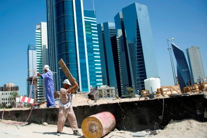
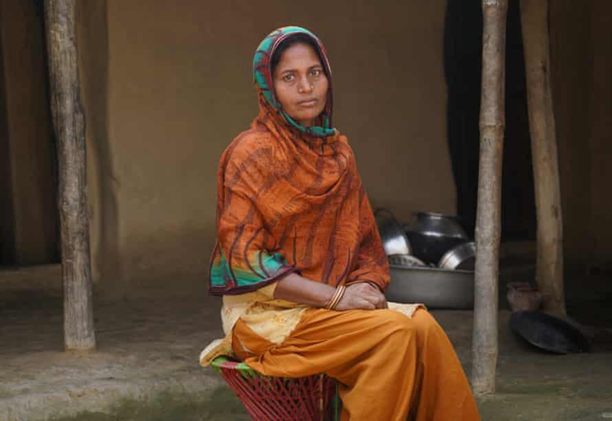
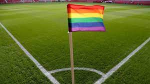
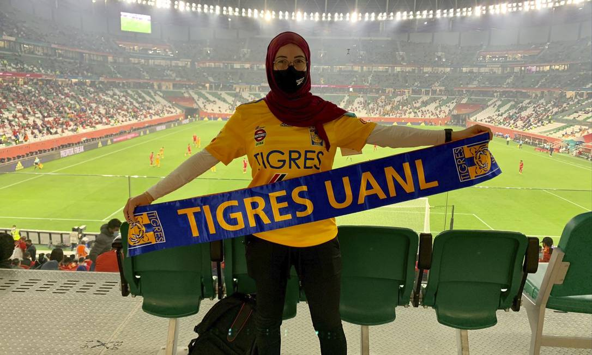

História do Catar
O Catar é um pequeno porém polêmico país localizado na Península Arábica. Com apenas 11.571 km² de extensão territorial e pouco mais de 2.700.00 habitantes, os anfitriões dessa Copa são um dos países mais ricos, porém a forma com que toda essa riqueza foi obtida é um tanto questionável. Vamos entender mais sobre os donos da casa.
Devido à divisão do Império Otomano, o país era um protetorado britânico até 1971, quando se tornaram independetes do Reino Unido. Sua riqueza é proveniente da exploração do petróleo e do gás natural, que começou na década de 40 e é o que torna o Catar um dos países mais ricos do mundo. No Catar, os partidos políticos são proibidos, e existem vários relatos de opressão e tortura aos opositores do governo catariano.
Trabalho Escravo
Uma das coisas mais tristes que ocorrem no Catar são as decorrentes notícias de trabalho escravo no país. Desde que eles foram escolhidos para sediar a Copa do Mundo de 2022, já se tem notícia de mais de 7 mil mortes nas construções dos estádios, sendo a maioria esmagadora deles imigrantes vindo do Paquistão, Índia, Nepal, Bangladesh e Sri Lanka, e nessa conta não entram outros países fornecedores de mão de obra para o Catar, como Filipinas e Quênia, ou seja, esse número pode ser muito maior. Uma coisa que causa estranhamento nesses dados é o gigantesco número de mortes por "causas naturais", especula-se que essas mortes podem estar associadas ao trabalho sob elevadíssimas temperaturas no verão catariano, que podem chegar até 50°C.
Uma das vítimas do trabalho forçado foi o nepalês Mohammad Nadaf, que foi ao Catar com a promessa de trabalhar com limpeza, porém na realidade, ele foi forçado a carregar pedras de 60 kg nas obras da Copa. Sabendo da situação de Nadaf, sua esposa, Mairul Khatun e seu irmão Abram Nadaf tentaram convencer os financiadores das obras a enviá-lo de volta, porém não obtiveram resposta, pois Nadaf ainda não tinha pago o que "devia" pela ida ao Catar. A família nunca recebeu nenhuma compensação e Nadaf entrou pra triste estatística daqueles que morreram de "causas naturais" nas obras da Copa. O governo catariano nega o número de mais de 7 mil mortes nas construções dos estádios, eles alegam que deveriam ser contabilizados apenas os acidentes de trabalho, e não aqueles que morreram de supostas causas naturais, como Mohammad Nadaf. Outro ponto importante é que o presidente da FIFA, Gianni Infantino parece não se preocupar muito com esse assutador número, já que ele afirmou em evento nos EUA que o Catar "dá dignidade e orgulho" aos trabalhadores.
Homofobia e Machismo
Outro ponto extremamente triste sobre o Catar são os recorrentes casos de homofobia e machismo que ocorrem por lá, grande parte deles até de certa forma incentivados pelas autoridades locais. De acordo com o presidente do Comitê Antiterrorismo do país, as bandeiras que tiverem as cores do arco-íris serão confiscadas durante a Copa, sem contar a legislação do Catar que é abertamente homofóbica.
Podemos também destacar o triste caso da economista mexicana Paola Schietekat, de 27 anos. Paola trabalhou como economista comportamental para o Comitê Supremo de Entrega e Legado, entidade responsável pela organização da Copa do Mundo. Porém, o que parecia um sonho virou um pesadelo no dia 6 de junho de 2021. Isso porque Paola viveu um trauma de adolescênica mais uma vez, já que ela já havia sido vítima de violência sexual aos 16 anos. Para que o crime cometido contra ela não passasse impune novamente, a economista resolveu denunciar o caso às autoridades do Catar. Mas a resposta que ela obteve foi bem diferente do que esperava e extremamente revoltante: o tribunal soltou seu agressor (que até hoje nem teve o nome divulgado) e a condenou a 100 chicotadas e 7 anos de prisão por "manter um caso extraconjugal" com o homem que a violentou.
Doha
A maravilhosa cidade de Doha, capital do Catar, possui 2.300.000 dos 2.700.000 habitantes do país, aproximadamente. A capital catariana impressiona por causa de suas gigantescas e modernas construções. Doha foi fundada por volta de 1820, como uma vizinhanã de Al Bidda e foi declarada capital em 1971, quando o Catar se tornou independente do Reino Unido. A cidade de Doha receberá 15 jogos, no Al Thumama Stadium e no Stadium 974.